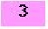
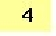

Syntaxe :
rcp source destination
avec source et destination de la forme [[user@]host:]pathname
La commande « rcp » est similaire à la commane « cp » d'UNIX. Comme « cp », « rcp » aura un comportement différent selon le nombre d'arguments :
« rcp » ne demande pas de mot de passe si une équivalence système ou utilisateur a été configurée.
Dans le cas contraire, elle ne fonctionne pas (message « Permission denied »). « rcp » autorise des transferts mettant en jeu plusieurs machines. Par exemple, si vous êtes connecté sur une machine, vous pouvez transférer des fichiers entre deux n uds du réseau totalement différents.
uds du réseau totalement différents.
La source et la destination se présentent sous la forme
[[user@]host:]pathname avec :
| host | Spécifie le système sur lequel se trouve le fichier. Si « host » n'est pas précisé, le système local est utilisé par défaut. |
| user | Spécifie l'utilisateur sur « host ». Si « user » n'est pas précisé, l'utilisateur sur le site distant est le même que sur le site local (les noms des utilisateurs doivent correspondre d'un système à l'autre). |
| pathname | Donne le chemin du fichier à copier. Il peut être relatif ou absolu. Un chemin relatif est interprété de manière relative par rapport au répertoire de connexion sur le site distant ou par rapport au répertoire courant sur le site local. |
Il est possible d'utiliser les métacaractères pour référencer des fichiers. N'oubliez pas que le shell local interprète n'importe quel métacaractère avant d'appeler « rcp ». Pour empêcher une substitution locale des métacaractères devant être traités par le site distant, mettez les entre simples quotes (cf. section ![[*]](crossref.png) ).
).
Exemple 3..3 :
On supposera que toutes les équivalences utilisateur et système ont été configurées correctement.
Le processus de cet exemple est décrit au tableau
Dans la configuration décrite dans la figure ,
| Exemple | Description |
| L'utilisateur willow sur la machine dragon copie le fichier excalibur.c de l'utilisateur arthur sur la machine king dans son répertoire courant. | |
| L'utilisateur willow sur la machine dragon copie le fichier local donjon.c sur la machine dragon vers le répertoire de connexion de l'utilisateur willow sur la machine dulac. | |
|  | L'utilisateur willow sur la machine dragon copie tous les fichiers « .c » de l'utilisateur arthur sur la machine king vers son répertoire courant. |
|  | L'utilisateur willow sur la machine dragon copie le fichier excalibur.c de l'utilisateur arthur sur la machine king vers le répertoire de connexion de l'utilisateur lancelot sur la machine dulac. |
On obtient l'exemple illustré dans la figure .